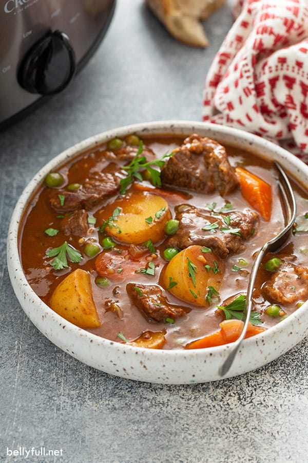

Slow Cooker Beef Stew

Hearty slow cooker beef stew, loaded with vegetables, super tender meat, and packed with incredible flavor.
I took my unbelievable classic beef stew recipe (seriously the best beef stew ever – MAKE IT!), tweaked several ingredients and converted it to the crock pot and this slow cooker beef stew was born. It’s so delicious! That’s saying a lot, since I’m not a huge crock pot lover. But this recipe is great – the vegetables are tender, but not mushy and the flavor is totally there. Not bland at all, like so many slow cooker recipes tend to be. Whomp whomp.
Ingredients
- 2 tablespoons extra-virgin olive oil
- 2 pounds beef chuck roast , cut into 1 to 1 1/2-inch cubes
- Kosher salt and freshly ground black pepper , to taste
- 1 pound baby new potatoes , halved
- 4 medium carrots , peeled and cut into 1/2-inch thick pieces
- 1 large sweet onion , diced
- 3 cloves garlic , minced
- 2 cups low-sodium beef broth
- 1 cup vegetable juice (such as V8)
- 3 tablespoons tomato paste
- 1 tablespoon Worcestershire sauce
- 1 sprig fresh thyme (or 1/2 teaspoon dried)
- 1 teaspoon dried oregano
- 1 teaspoon smoked paprika
- 1 teaspoon mustard seeds
- 2 bay leaves
- 3 tablespoons all-purpose flour
- 1/2 cup frozen peas , thawed
- 2 tablespoons chopped fresh parsley leaves , for garnish
Steps
- Warm olive oil in a large skillet over medium heat.
- Season beef with salt and pepper, to taste. Add beef to the skillet and cook until evenly browned, about 2-3 minutes.
- Place beef, potatoes, carrots, onion, and garlic into a 6-quart slow cooker.
- In a bowl, whisk together the beef broth, vegetable juice, tomato paste, Worcestershire, thyme, oregano, paprika, and mustard seeds until well combined; pour over the the beef and vegetables.
- Toss in 2 bay leaves and season with salt and pepper, to taste.
- Cover and cook on low heat for 7-8 hours.
- Whisk together flour and 1/2 cup stew broth to create a slurry. Slowly stir the mixture into the slow cooker. Cover and cook on high heat for an additional 30 minutes, or until thickened.
- During the last 5 minutes, stir in the peas.
- Discard bay leaves and thyme sprig.
- Serve immediately in bowls, garnished with parsley, if desired.